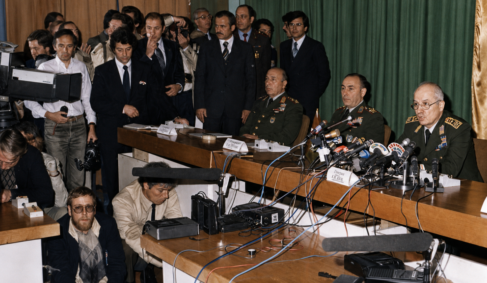
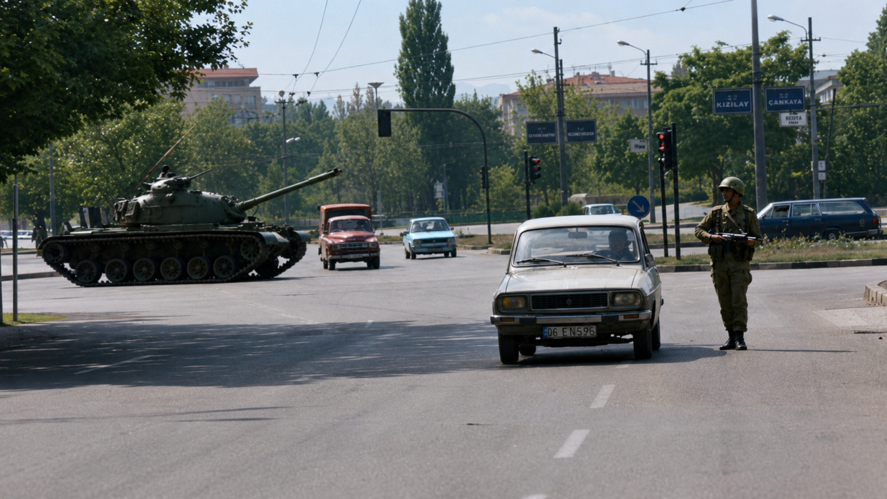
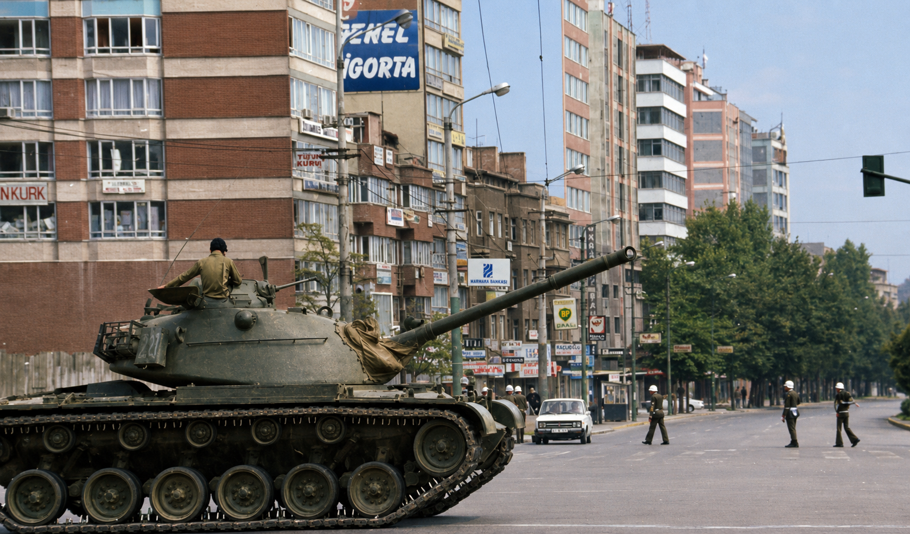

12 сентября
В пятницу, 12 сентября 1980 года, в 03:59 по местному времени радио Турции вышло в эфир с маршем Истикляль. За ним последовал Боевой марш. Затем — зачитано обращение Совета национальной безопасности №1, подписанное начальником Генерального штаба генералом Кенаном Эвреном. Парламент распущен. Правительство отправлено в отставку. По всей стране введено чрезвычайное положение. С 5 утра — комендантский час до отмены.
Страна к этому моменту уже восемь лет шла к этой ночи. 1971-й дал первое предупреждение — «меморандумный переворот», без танков, но с ультиматумом. Потом — относительное затишье. Потом — Кипр, эмбарго, экономический кризис, и с середины 1970-х страна погрузилась в политическое насилие, которое к 1980 году превратилось в хроническую войну. Левые против правых, националисты против коммунистов, исламисты против всех. Кахраманмараш в 1978-м — 105 убитых за несколько дней. Чорум. Фатса.
Только в 1980 году в стране произошло около 10 000 террористических эпизодов. Более 2 000 человек убиты. Ежедневно в среднем — больше пяти смертей от политического насилия. ВНСТ не мог избрать президента: 6 апреля закончился срок Фахри Коруптюрка, и за несколько месяцев прошло более ста туров голосования — безрезультатно. АП Демиреля, CHP Эджевита: ни у кого не было большинства, ни у кого не было воли к компромиссу.
Военные предупредили. 27 декабря 1979 года Эврен и командующие родами войск направили открытое письмо президенту: страна на пороге гражданской войны, политики должны действовать. Письмо проигнорировали. 9 месяцев спустя они действовали сами.
Операция «Байрак» — «Флаг» — прошла без единого выстрела. Армия знала, что делает. Эджевит и Демирель задержаны у своих домов и этапированы на военные базы. Неджметтин Эрбакан арестован в Гелиболу. Алпарслан Тюркеш — в Измире. 16 сентября все гражданские партии были приостановлены. 15 октября 1981 года — ликвидированы официально.
Совет национальной безопасности состоял из пяти человек — по одному от каждого рода войск. Это была не толпа заговорщиков, а вертикаль армейской иерархии, просто переехавшая в президентский дворец. Эврен — начальник Генштаба, первый среди равных. Рядом: генерал Нуреттин Эрсин — главком сухопутных войск, фактически второй человек хунты, координировавший военные трибуналы и массовые аресты по всей стране. Генерал Тахсин Шахинкая — ВВС; впоследствии окажется, что он богатейший из пятерых — Time включит его в список богатейших генералов мира на фоне скандала с закупкой американских F-16. Адмирал Неджат Тюмер — ВМС, следил за портами и морскими границами, через которые радикалы пытались бежать или ввезти оружие. Генерал Седат Джеласун — командующий жандармерией; его люди проводили зачистки в провинциях, где сухопутные войска были лишними.
Экономику военные отдали штатскому. Тургут Озал не входил в СНБ — но именно он, оставшись вице-премьером по экономике, под крылом хунты делал то, что никакое гражданское правительство не решилось бы сделать в мирное время: открывал рынок, убирал госрегулирование цен, запускал иностранный капитал. Генералы зачищали улицы — Озал перестраивал экономику. Союз был прагматичным и очень продуктивным для обоих.
18 сентября сформировано гражданское правительство — под военным контролем. Премьером стал отставной адмирал Бюлент Улусу.
Военные трибуналы работали без остановки. К 1983 году через систему задержаний прошло около 650 тысяч человек. 230 тысяч предстали перед трибуналами. Официально казнены 50 человек — 18 левых, 8 правых, остальные за уголовные преступления. Сколько погибло в тюрьмах от пыток или просто исчезло — точно не считалось.
13 декабря 1980-го повешен Эрдал Эрен — ему было семнадцать, когда его задержали.
Страна замолчала. Не только от страха — хотя и от него тоже. Просто после десяти лет насилия многие приняли переворот как неизбежное. Это молчаливое согласие стало главным капиталом военных.
Эврен проживёт ещё долго. После 1989-го уйдёт на покой в Мармарис, будет писать маслом картины, выглядеть уважаемым государственным пенсионером. В 2010-м парламент отменит статью конституции, дававшую организаторам переворота иммунитет от уголовного преследования. В 2012-м, когда Эврену исполнится 94 года, против него возбудят дело. Слишком старый, чтобы приходить в суд — давал показания по видеосвязи из военного госпиталя. В 2014-м суд приговорит его к пожизненному заключению и разжалует из генералов в рядовые. Он умрёт 9 мая 2015-го, в 97 лет, так и не попав в настоящую камеру. На похоронах — ни одной ведущей партии. У ворот — родственники жертв.
---

